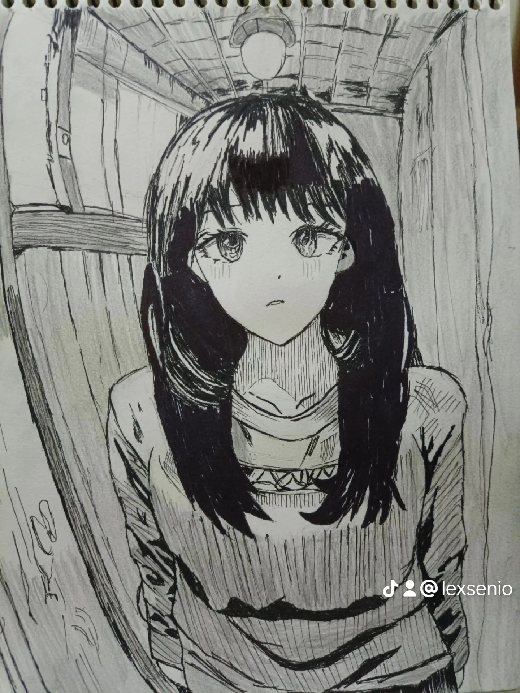

Minat & Hobi
Selain mendalami dunia toknologi informasi dan full-stack development,saya memiliki minat besar di bidang mobile developer dan UI/UX.dan Hobi saya yaitu menggambar ilustrasi terang gelap anime
Karya Ilustrasi
Geser atau scroll ke kanan secara horizontal untuk melihat aset gambar:

Monster

One Punch Main

War Devil

Tatsumaki
